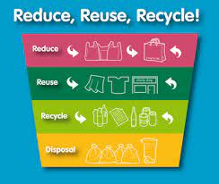
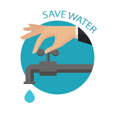
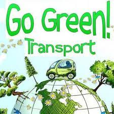

Welcome to our Environmental Science Website!
At the intersection of nature and knowledge, lies our responsibility to protect and preserve our planet. Environmental science is the key that unlocks a sustainable future for generations to come.
Through scientific inquiry and innovative solutions, we explore the intricate web of ecosystems, unravel the effects of human activity, and advocate for positive change. Together, we can make a difference.
Join us on this journey as we dive deep into pressing environmental issues, empower individuals with knowledge, and inspire action to create a greener, healthier world for all.
Featured Topics
Reduce, Reuse, Recycle - Embrace the Power of Sustainability

Learn about the importance of reducing waste, reusing materials, and recycling to minimize our impact on the environment. By embracing sustainable practices, we can create a better future for our planet and future generations.
Read More
Conserve Water - Every Drop Counts

Discover practical tips and techniques for conserving water at home, such as fixing leaks, using water-efficient appliances, and practicing mindful water usage. Together, let's make every drop count and ensure a sustainable water future for all.
Read More
Go Green with Transportation - Sustainable Mobility for a Greener World

Explore eco-friendly transportation options like walking, cycling, carpooling, and using public transit to reduce carbon emissions and promote sustainable mobility. Let's make greener choices for a healthier planet and a brighter future.
Read More